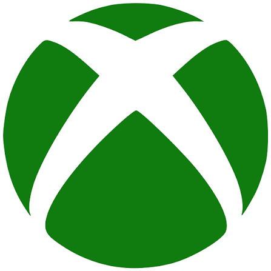
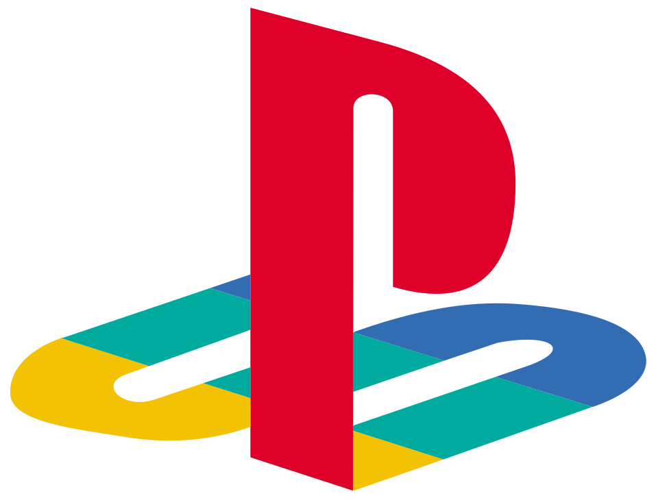

Para gamers
Sua identidade gamer.
Crie seu perfil, mostre os jogos que você ama e construa sua presença dentro do Something Gamer.



Steam já conecta e importa sua biblioteca. Xbox e PlayStation entram assim que as credenciais oficiais saírem.
- Perfil gamer personalizado
- Biblioteca de jogos
- Conquistas e estatísticas
- Conexões com plataformas
- Descobrir outros gamers